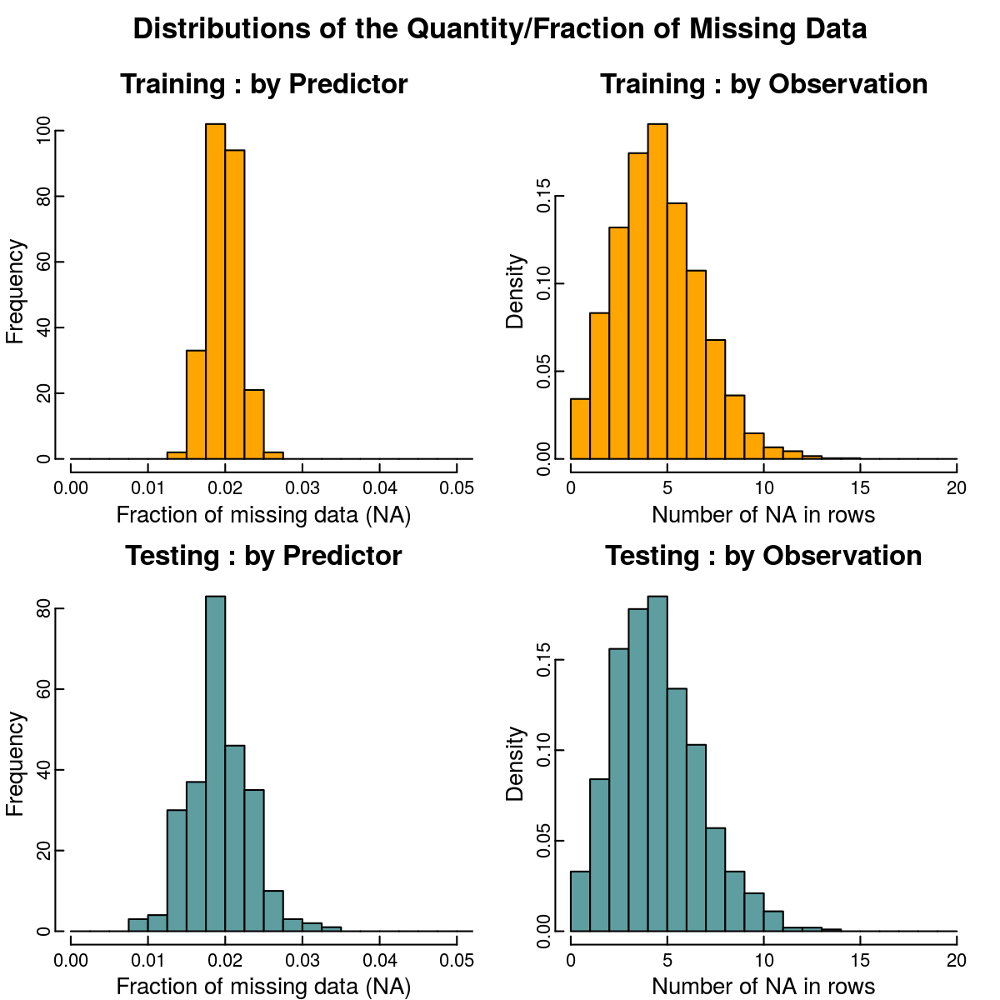
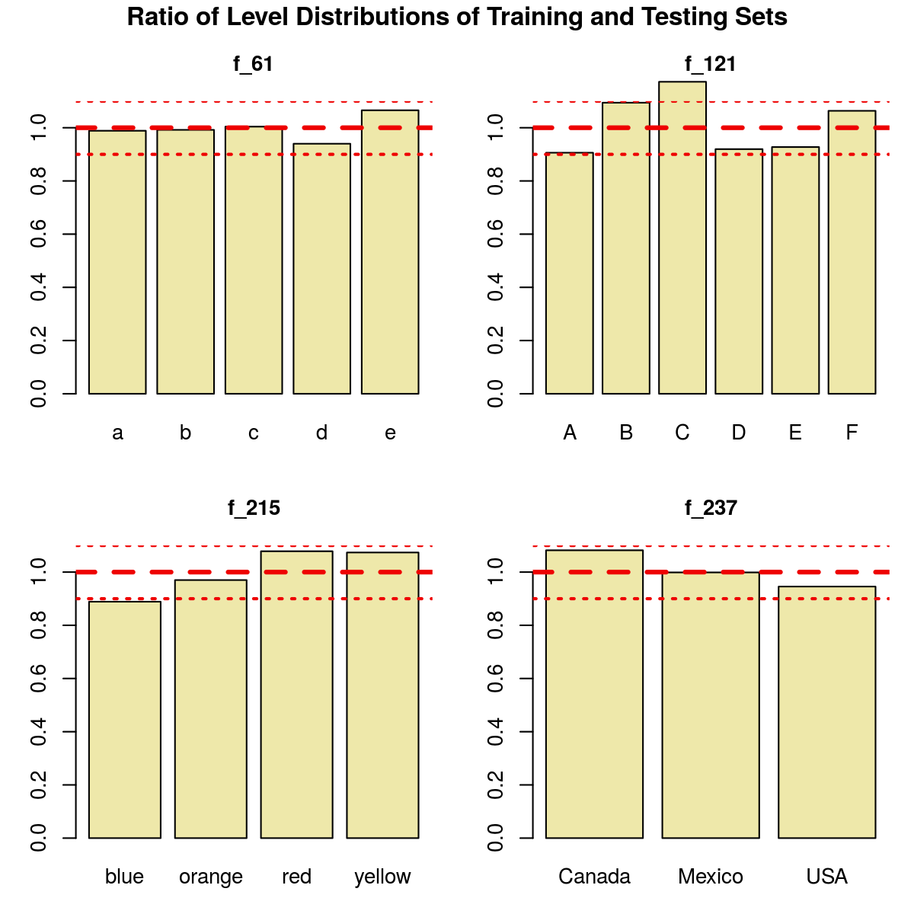
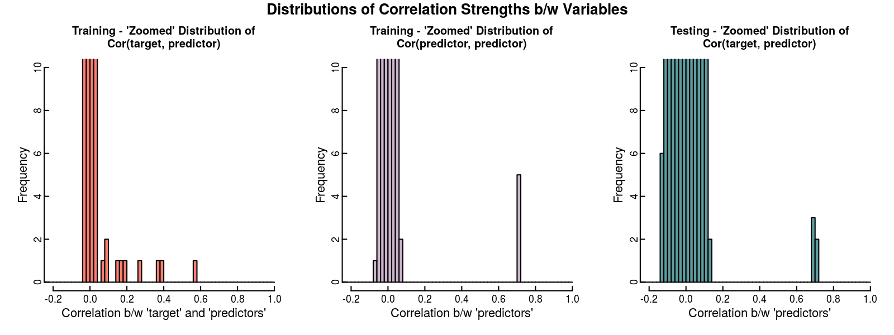
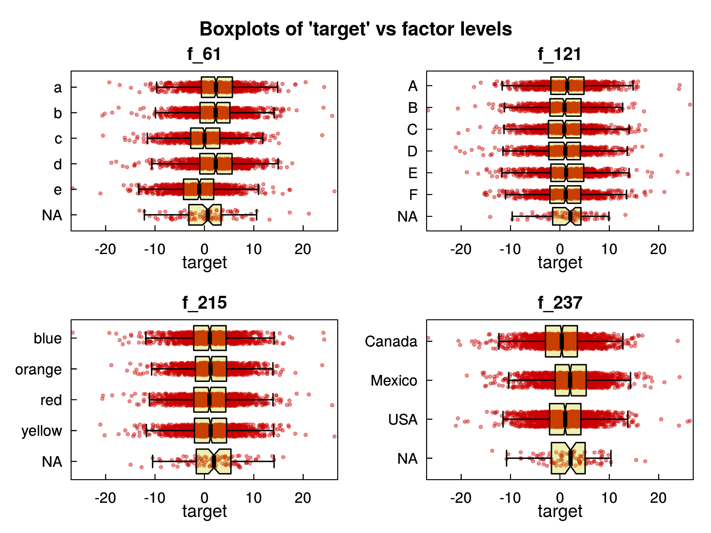
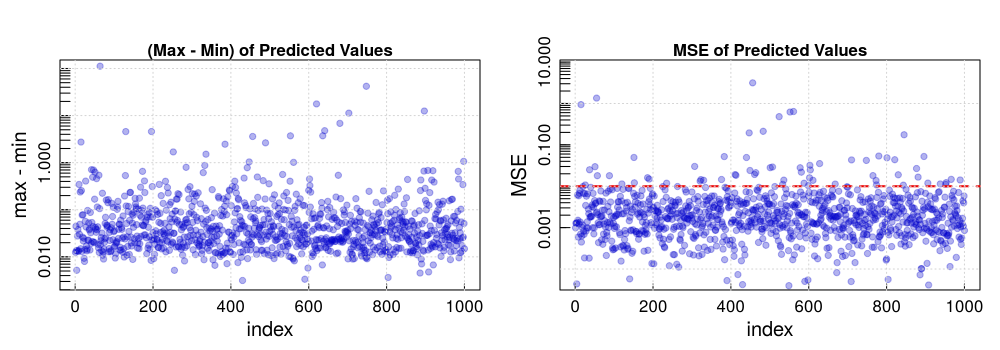

Data Challenge on Synthetic Data Set
Giovanni Fossati
SUMMARY
This is the analysis of a synthetic dataset provided for a data challenge.
Before focusing on model building, we had to tackle the issue of missing data, which, while not being in aggregate a large fraction of the data set, are distributed in such a way that ignoring incomplete observations was not an option.
Based on a quick review of the data, we made the assumption that the data were missing completely at random, and so we deemed it acceptable to adopt a simple approach for imputing them, mostly based on random sampling from the existing data for each variable.
The model we adopted in the end is Multivariate Adaptive Regression Splines (MARS). It offers an attractive combination of light computational “cost”, flexibility, built-in variable selection, interpretatibility, and on the Training data set it gave good results (fitting included cross validation). On the Training data sets these models yield \(MSE \simeq 2.4\) and \(R^2 \simeq 0.91\).
We computed predictions of best-fit models on four different imputed Training data, on each of four different imputed Testing data sets, and then averaged their predictions to obtain our prediction for submission.
One reason of concern is that the statistical properties of the data seem to slightly differ between the Training and the Testing data sets. On the other hand, considering that the model is using only about a dozen variables, it is possible that its performance may not be so seriously affected by this apparent difference.
Read also these additional thoughts.
Note on the Report Reproducible Format
This report is generated from a Rmarkdown document which includes all code to perform data processing, modeling, plotting, etc. (except for functions defined in external scripts, included in the archive). However, for readability only a few bits of code are echoed explicitly in the compiled document. The full straight reproducibility is only limited by the fact that in the interest of simplicity and for computational convenience some parts of the processing have been flagged as inactive (eval = FALSE), and in its current form some data are instead loaded from previously saved work, namely the model fitting. That said, the document includes the code to perform the entire analysis, and a few changes would allow to do so by compiling it.
The source files are posted on GitHub
DATA LOADING AND SET UP
train <- read.delim(file = "data/training.txt.gz", stringsAsFactors = FALSE)
test <- read.delim(file = "data/testing.txt.gz", stringsAsFactors = FALSE)Beside the target variable that is numeric, the data sets comprise 254 variables, with the following breakdown by type:
table(sapply(train[, -1], class))
#
# character numeric
# 4 250The non-numeric variables are: f_61, f_121, f_215, f_237. They are all of of character type and look like bona fide factor variables, non-ordered.
I will refer to them as factors or character variables interchangeably.
For convenience of processing I defined flags for character/non-character variables and vectors of indices to be able to directly select them when necessary to handle numeric and character variables separately.
flag_factor_cols <- sapply(train[, -1], is.character)
idx_factors <- (2:ncol(train))[flag_factor_cols]
idx_numeric <- (2:ncol(train))[!flag_factor_cols]
factor_cols_names <- colnames(train)[idx_factors]Fixing Empty Strings as NA in the Character Variables
Missing data in character variables are not directly translated into NA but treated simply as empty strings.
Assuming that they are in fact missing data, we need to change them to be proper NAs.
# Training set
for( s in factor_cols_names) { train[train[, s] == "", s] <- NA }
# Testing set
for( s in factor_cols_names) { test[test[, s] == "", s] <- NA }EXPLORATORY ANALYSIS
Missing Data
First step is to review how missing data are distributed in the data set, starting with how many they are.
NOTE: tables showing these statistics in more detail are included in the APPENDIX.
Training Data Set
train.NA_by_column <- sapply(train[, -1], function(x) {sum(is.na(x))})
train.NA_by_row <- apply(train[, -1], 1, function(x) sum(is.na(x)))
train.sum_NA <- sum(is.na(train[, -1]))
train.avrg_NA_by_column <- train.sum_NA/ncol(train[, -1])
train.pct_NA_by_column <- 100*train.avrg_NA_by_column/nrow(train[, -1])
train.avrg_NA_by_row <- train.sum_NA/nrow(train[, -1])
train.pct_NA_by_row <- 100*train.avrg_NA_by_row/ncol(train[, -1])
train.clean_columns <- sum(train.NA_by_column == 0)
train.clean_rows <- sum(train.NA_by_row == 0)In the Training set there are overall 25207
NA, out of \(1.27\times 10^{6}\) data points, i.e. about 1.98% of the total data.- Summary by Columns (i.e. Variables):
- There are 0 variables without
NA. - On average variables have around 99.2 (i.e. 1.98% of 5000 observations).
- There are 0 variables without
Summary by Rows (i.e. Observations):
- There are 32 observations exempt from
NA, just about 0.64%. - On average observations have around 5 (i.e. 1.98% of 254 variables).
- There are 32 observations exempt from
Testing Data Set
test.NA_by_column <- sapply(test, function(x) {sum(is.na(x))})
test.NA_by_row <- apply(test, 1, function(x) sum(is.na(x)))
test.sum_NA <- sum(is.na(test))
test.avrg_NA_by_column <- test.sum_NA/ncol(test)
test.pct_NA_by_column <- 100*test.avrg_NA_by_column/nrow(test)
test.avrg_NA_by_row <- test.sum_NA/nrow(test)
test.pct_NA_by_row <- 100*test.avrg_NA_by_row/ncol(test)
test.clean_columns <- sum(test.NA_by_column == 0)
test.clean_rows <- sum(test.NA_by_row == 0)The Testing data set that contains 4973
NA, out of \(2.53\times 10^{5}\) total data points, i.e. about 1.97%.- Summary by Columns (i.e. Variables):
- There are 0 variables without NA.
- On average variables have around 19.6 (i.e. 1.96% of 1000 observations).
- Summary by Rows (i.e. Observations):
- There are 6 observations exempt from
NA, just about 0.6%. - On average observations have around 5 (i.e. 1.96% of 254 variables).
- There are 6 observations exempt from
train.NA_stats <- c(train.sum_NA,
nrow(train),
train.clean_columns,
train.avrg_NA_by_column,
train.pct_NA_by_column,
train.clean_rows,
train.avrg_NA_by_row,
train.pct_NA_by_row)
test.NA_stats <- c(test.sum_NA,
nrow(test),
test.clean_columns,
test.avrg_NA_by_column,
test.pct_NA_by_column,
test.clean_rows,
test.avrg_NA_by_row,
test.pct_NA_by_row)
df.NA_stats <- as.data.frame( matrix(c(train.NA_stats, test.NA_stats), nrow = 2, byrow = TRUE),
row.names = c("Training", "Testing") )
colnames(df.NA_stats) <- c("n_NA", "n_Obs",
"compl_col", "avrg_NA_by_col", "pct_NA_by_col",
"compl_row", "avrg_NA_by_row", "pct_NA_by_row")| n_NA | _Obs | compl cols | NA/col (N) | NA/col (%) | compl rows | NA/row (N) | NA/row (%) | |
|---|---|---|---|---|---|---|---|---|
| Training | 25207 | 5000 | 0 | 99.24 | 1.98 | 32 | 5.04 | 1.98 |
| Testing | 4973 | 1000 | 0 | 19.58 | 1.96 | 6 | 4.97 | 1.96 |
Visual comparison of NA statistics
These plots show that on aggregate the Training and Testing sets are affected by NA in similar ways.
This does not imply that the detailed distribution of NA in rows and columns may not be biased by some trend that would not be revealed by this plots.
hstep <- 0.0025
# par(mfrow = c(2, 2))
# par(oma = c(0 ,0, 1, 0))
single_panel_mar <- c(2, 2, 2, 1)
single_panel_oma <- c(0 ,0, 2, 0)
gr_par <- list( mar = single_panel_mar, oma = single_panel_oma,
cex = 1.0, cex.axis = 0.8, cex.lab = 1.0,
las = 0, mgp = c(1.0, 0.0, 0),
tcl = 0.3)
par(gr_par)
mat.layout <- matrix(1:4, nrow = 2, byrow = TRUE)
layout(mat.layout)
# n_NA/n_TOT , more comparable with testing set
hist(train.NA_by_column/nrow(train), breaks = seq(0.0, 0.1, by = hstep),
xlim = c(0.0, 0.05),
col = "orange",
xlab = "Fraction of missing data (NA)",
main = "Training : by Predictor")
hist(train.NA_by_row, freq = FALSE, breaks = seq(0, 20, by = 1),
xlim = c(0, 20),
col = "orange",
xlab = "Number of NA in rows",
main = "Training : by Observation")
# n_NA/n_TOT , more comparable with train set
hist(test.NA_by_column/nrow(test), breaks = seq(0.0, 0.1, by = hstep),
xlim = c(0.0, 0.05),
col = "cadetblue",
xlab = "Fraction of missing data (NA)",
main = "Testing : by Predictor")
hist(test.NA_by_row, freq = FALSE, breaks = seq(0, 20, by = 1),
xlim = c(0, 20),
col = "cadetblue",
xlab = "Number of NA in rows",
main = "Testing : by Observation")
par(fig = c(0, 1, 0, 1), mar = c(5, 4, 4, 1)+0.1, cex.axis = 1.0)
title("Distributions of the Quantity/Fraction of Missing Data", cex.main = 1.25, outer = TRUE)
Summary of Numeric Variables
A quick visual review of the distribution of the values of each variable shows that they are all approximately similar, Gaussian-looking (roughly speaking).
Because of this, their distributions can be characterized reasonably well by standard simple summary statistics for each variable.
We prepare a data frame with the basic summary statistics for each numeric variable (from summary()), adding interquartile range and standard deviation.
train.stats_by_column <- as.data.frame(t(sapply(train[, idx_numeric], summary)))
colnames(train.stats_by_column) <- c("min", "q025", "median", "mean", "q075", "max", "nNA")
# add IQR
train.stats_by_column$IQR <- (train.stats_by_column$q075 - train.stats_by_column$q025)
# add std.dev.
train.stats_by_column$sd <- sapply(train[, idx_numeric], function(x) sd(x, na.rm = TRUE))For illustration this is a random sample of rows from the resulting data frame:
| min | q025 | median | mean | q075 | max | nNA | IQR | sd | |
|---|---|---|---|---|---|---|---|---|---|
| f_68 | -3.742 | -0.669 | 0.008 | -0.006 | 0.660 | 3.327 | 83 | 1.329 | 0.999 |
| f_129 | -3.464 | -0.654 | 0.009 | 0.008 | 0.699 | 3.836 | 103 | 1.353 | 1.000 |
| f_179 | -4.041 | -0.683 | -0.028 | -0.020 | 0.641 | 3.173 | 99 | 1.324 | 0.984 |
| f_195 | -2.479 | -0.487 | -0.015 | -0.015 | 0.466 | 2.674 | 86 | 0.953 | 0.718 |
| f_203 | -3.939 | -0.651 | 0.016 | 0.011 | 0.672 | 3.777 | 106 | 1.323 | 0.989 |
| f_242 | -3.473 | -0.683 | 0.001 | -0.003 | 0.681 | 3.875 | 93 | 1.364 | 1.015 |
Same preparation for the Testing set:
test.stats_by_column <- as.data.frame(t(sapply(test[, idx_numeric-1], summary)))
colnames(test.stats_by_column) <- c("min", "q025", "median", "mean", "q075", "max", "nNA")
test.stats_by_column$IQR <- (test.stats_by_column$q075 - test.stats_by_column$q025)
test.stats_by_column$sd <- sapply(test[, idx_numeric-1], function(x) sd(x, na.rm = TRUE))all.stats_by_column <- bind_rows(train.stats_by_column, test.stats_by_column)
all.stats_by_column$set <- c(rep("train", 250), rep("test", 250))Distributions of Summary Statistics of Predictors
First we inspect visually the distribution of the summary statistics for the 250 numeric variables.
The following figures show the density curves for median, 0.25 quantile, 0.75 quantile and interquartile range, overlaying the curves for the Training (orange/yellow) and the Testing (blue) data sets.
p1 <- ggcompare_stats_distributions(data = all.stats_by_column, var = "median", xlim = c(-0.25, 0.25))
p2 <- ggcompare_stats_distributions(data = all.stats_by_column, var = "q025", xlim = c(-0.85, -0.35))
p3 <- ggcompare_stats_distributions(data = all.stats_by_column, var = "q075", xlim = c(0.35, 0.85))
p4 <- ggcompare_stats_distributions(data = all.stats_by_column, var = "IQR", xlim = c(0.85, 1.55))
grid.arrange(p1, p2, p4, p3, nrow = 2, main = "Comparison of Summary Statistics of Numeric Variables")
The two sets of plots reveal an issue that has the potential of affecting negatively the predictive power of a model built (trained) on the Training set when applied to this Testing set: the distribution of some of these summary statistics differ between Training and Testing data sets, namely they are systematically broader in the Testing set than they are in the Training set.
The fact that the distributions of medians and quantiles are different raises some concern for the modeling To review this matter further we can look at scatter plots of the summary statistics, shown below.
par(fig = c(0, 1, 0, 1))
single_panel_mar <- c(2, 2, 2, 1)
single_panel_oma <- c(0 ,0, 2, 0)
gr_par <- list( mar = single_panel_mar, oma = single_panel_oma,
cex = 1.0, cex.axis = 0.8, cex.lab = 1.0,
las = 0, mgp = c(1.0, 0.0, 0),
tcl = 0.3)
mat.layout <- matrix(1:4, nrow = 2, byrow = FALSE)
layout(mat.layout)
test_flag <- rep(FALSE, length(idx_numeric))
par(gr_par)
plot_stats_vs_stats(data1 = train.stats_by_column, data2 = test.stats_by_column, var = "median", flag = test_flag)
plot_stats_vs_stats(data1 = train.stats_by_column, data2 = test.stats_by_column, var = "IQR", flag = test_flag)
plot_stats_vs_stats(data1 = train.stats_by_column, data2 = test.stats_by_column, var = "q025", flag = test_flag)
plot_stats_vs_stats(data1 = train.stats_by_column, data2 = test.stats_by_column, var = "q075", flag = test_flag)
par(fig = c(0, 1, 0, 1), mar = c(5, 4, 4, 1)+0.1, cex.axis = 1.0)
title("Comparison of Summary Statistics of Numeric Variables", cex.main = 1.2, outer = TRUE, line = 0)
The scatter plots illustrate clearly the different extension of the scatter in the Training and Testing sets.
As a side note, there are a handful of outliers, particularly noticeable in quantile plots.
Before modeling it is hard to tell if these will turn out to be important variables, but they certainly stand out in these plots. We can pick them out by filter the data frame on the q075 value:
| min | q025 | median | mean | q075 | max | nNA | IQR | sd | |
|---|---|---|---|---|---|---|---|---|---|
| f_47 | -2.769 | -0.495 | -0.035 | -0.029 | 0.441 | 2.344 | 102 | 0.935 | 0.705 |
| f_75 | -2.463 | -0.481 | -0.013 | 0.003 | 0.478 | 2.429 | 110 | 0.959 | 0.707 |
| f_161 | -2.923 | -0.477 | 0.017 | 0.001 | 0.473 | 2.394 | 94 | 0.950 | 0.702 |
| f_169 | -2.713 | -0.462 | 0.015 | 0.015 | 0.488 | 2.639 | 91 | 0.951 | 0.701 |
| f_195 | -2.479 | -0.487 | -0.015 | -0.015 | 0.466 | 2.674 | 86 | 0.953 | 0.718 |
Summary of Non-Numeric Variables
Four of the predictors are factors, and we can compare them between Training and Testing set by looking at the distribution of the data over their levels. We first computed the fraction of data in each level of a factor, in the two sets separately, and then took the ratio (Training/Testing). The following barplots show these ratios for the four factor variables. Horizontal lines mark the 0.9, 1.0, and 1.1 points.
In all variables there are variations up to 10% (larger for f_121), which raise another red flag for modeling. For instance, if a model considered important levels A and C of f_121, the fact that A is 10% less populated in the Training set, and C 15% more, will affect negatively the quality of the predictions on the Testing set.
factors_table_train <- sapply(train[, factor_cols_names], function(x) table(x, useNA = "always")/length(x))
factors_table_test <- sapply(test[, factor_cols_names], function(x) table(x, useNA = "always")/length(x))
par(fig = c(0, 1, 0, 1))
single_panel_mar <- c(3, 3, 3, 1)
single_panel_oma <- c(0 ,0, 1, 0)
mat.layout1 <- matrix(1:4, nrow = 2, byrow = TRUE)
layout(mat.layout1)
par(mar = single_panel_mar, oma = single_panel_oma, cex.axis = 1.0, cex.main = 1.0)
barplot((factors_table_train$f_61/factors_table_test$f_61)[1:5], col = "palegoldenrod", ylim = c(0, 1.1), main = "f_61")
abline(h=1.0, col = "red2", lty = 2, lwd = 3)
abline(h=1.1, col = "red2", lty = 3, lwd = 2)
abline(h=0.9, col = "red2", lty = 3, lwd = 2)
barplot((factors_table_train$f_121/factors_table_test$f_121)[1:6], col = "palegoldenrod", ylim = c(0, 1.1), main = "f_121")
abline(h=1.0, col = "red2", lty = 2, lwd = 3)
abline(h=1.1, col = "red2", lty = 3, lwd = 2)
abline(h=0.9, col = "red2", lty = 3, lwd = 2)
barplot((factors_table_train$f_215/factors_table_test$f_215)[1:4], col = "palegoldenrod", ylim = c(0, 1.1), main = "f_215")
abline(h=1.0, col = "red2", lty = 2, lwd = 3)
abline(h=1.1, col = "red2", lty = 3, lwd = 2)
abline(h=0.9, col = "red2", lty = 3, lwd = 2)
barplot((factors_table_train$f_237/factors_table_test$f_237)[1:3], col = "palegoldenrod", ylim = c(0, 1.1), main = "f_237")
abline(h=1.0, col = "red2", lty = 2, lwd = 3)
abline(h=1.1, col = "red2", lty = 3, lwd = 2)
abline(h=0.9, col = "red2", lty = 3, lwd = 2)
par(fig = c(0, 1, 0, 1), mar = c(5, 4, 4, 1) + 0.1, cex.axis = 1.0)
title("Ratio of Level Distributions of Training and Testing Sets", cex.main = 1.2, outer = TRUE, line = 0)
The target Variable
Distribution of the Values of target.
(Please note that in order to increase the visibility of the low-count parts the vertical scale is logarithmic (\(log10()\)).)
gr_par <- list( mar = single_panel_mar, oma = single_panel_oma,
cex = 1.0, cex.axis = 0.8, cex.lab = 1.0,
las = 0, mgp = c(1.0, 0.0, 0),
tcl = 0.3)
par(gr_par)
col_hist <- "salmon"
hh <- hist(train$target, breaks = seq(-40, 40, by = 1.0), plot = FALSE)
flag_pos <- hh$counts > 0
hhy <- ifelse(hh$counts >0, log10(hh$counts), 0)
plot_filled_histogram(x = hh$breaks, y = c(hhy, 0),
xlim = c(-28, 28),
colors = c("black", "salmon"),
xlab = "target",
ylab = "log10(counts)",
main = "Distribution of Values of 'target' ")
grid()
Correlations b/w target and Predictors (and between Predictors)
Once again we treat factor variables separately.
We compute the correlation matrix with the option dropping NA only on a pair wise basis to preserve as much as possible the integrity of the result, as in this case we want to know the strength of the correlation between each two variables independently on the others.
corr1_pcomp <- cor(train[, idx_numeric], use = "pairwise.complete.obs")
corr2_pcomp <- cor(train[, c(1, idx_numeric)], use = "pairwise.complete.obs")
corr1_pcomp_test <- cor(test[, idx_numeric-1], use = "pairwise.complete.obs")
# deduplicated_corr_matrix_as_vector
corr1_pcomp_dedup <- data.frame(corr = (corr1_pcomp[upper.tri(corr1_pcomp, diag = FALSE)]))
corr1_pcomp_test_dedup <- data.frame(corr = (corr1_pcomp_test[upper.tri(corr1_pcomp_test, diag = FALSE)]))We summarize the unwiedly correlation matrices in following histograms plots: left to right:
- predictor-
targetcorrelation in the Training set, - predictor-predictor correlation in the Training set,
- predictor-predictor correlation in the Testing set.
To highlight the low-frequency cases, the vertical scale is truncated.
par(gr_par)
mat.layout <- matrix(1:3, nrow = 1, byrow = TRUE)
layout(mat.layout)
col_hist <- "salmon"
hist(corr2_pcomp[1, -1], freq = TRUE, breaks = seq(-1.0, 1.0, by = 0.02),
xlim = c(-0.2, 1.0),
ylim = c(0, 10),
col = col_hist,
xlab = "Correlation b/w 'target' and 'predictors'",
main = "Training - 'Zoomed' Distribution of\nCor(target, predictor)", cex.main = 1.2)
col_hist <- "thistle3"
hist(corr1_pcomp_dedup$corr, freq = TRUE, breaks = seq(-1.0, 1.0, by = 0.02),
xlim = c(-0.2, 1.0),
ylim = c(0, 10),
col = col_hist,
xlab = "Correlation b/w 'predictors'",
main = "Training - 'Zoomed' Distribution of\nCor(predictor, predictor)", cex.main = 1.2)
col_hist <- "cadetblue"
hist(corr1_pcomp_test_dedup$corr, freq = TRUE, breaks = seq(-1.0, 1.0, by = 0.02),
xlim = c(-0.2, 1.0),
ylim = c(0, 10),
col = col_hist,
xlab = "Correlation b/w 'predictors'",
main = "Testing - 'Zoomed' Distribution of\nCor(target, predictor)", cex.main = 1.2)
par(fig = c(0, 1, 0, 1), mar = c(5, 4, 4, 1)+0.1, cex.axis = 1.0)
title("Distributions of Correlation Strengths b/w Variables", cex.main = 1.2, outer = TRUE, line = 0)
test_corr1_pcomp <- corr1_pcomp
diag(test_corr1_pcomp) <- 0.0
train.correlated_variables <- row.names(which(abs(test_corr1_pcomp) > 0.6, arr.ind = TRUE)) %>% unique(.)
test_corr1_pcomp_test <- corr1_pcomp_test
diag(test_corr1_pcomp_test) <- 0.0
test.correlated_variables <- row.names(which(abs(test_corr1_pcomp_test) > 0.6, arr.ind = TRUE)) %>% unique(.)
train.correlated_with_target <- names(which(abs(corr2_pcomp[1, ]) > 0.1))[-1]There is very little correlation between variables in the Training data set, with a pile up in a narrow peak around 0 and only a handful of variables with stronger correlation, \(\sim 0.7\). In this case the Testing set exhibits very similar properties.
- Five pairs of predictors stand out at relatively high correlation strength, \(\sim 0.7\), involving the same 10 variables in the Training and Testing data sets:
f_47, f_35, f_218, f_169, f_175, f_94, f_161, f_205, f_195, f_75f_47, f_35, f_218, f_169, f_175, f_94, f_161, f_205, f_195, f_75
- About half a dozen predictors are weakly/mildly correlated with
target:f_35, f_47, f_161, f_175, f_195, f_205, f_218
In view of model building this findings would seem to indicate that we can expect that it will possible to model the outcome with a fairly limited subset of the predictors. We must keep in mind that the Pearson method is poorly suited for assessing relationship between variables for a wide range of scenario, but after reviewing scatterplots of the variables we think that in this case it may provide a reliable measure of correlation.
Scatterplots of target vs. Predictors
We visually inspected the scatterplots between target and all variables and they all look like smooth clouds with a central density peak, with in a few cases some elongation or substructures (e.g. the top right panel below). For illustrative purposes we would like to show a few examples of scatterplots for the target variable and predictors, for four different levels of correlation (see plot titles).
par(fig = c(0, 1, 0, 1))
single_panel_mar <- c(2, 2, 2, 1)
single_panel_oma <- c(0 ,0, 2, 0)
gr_par <- list( mar = single_panel_mar, oma = single_panel_oma,
cex = 1.0, cex.axis = 0.8, cex.lab = 1.0,
las = 0, mgp = c(1.0, 0.0, 0),
tcl = 0.3)
mat.layout <- matrix(1:6, nrow = 2, byrow = TRUE)
layout(mat.layout)
test_flag <- rep(FALSE, length(idx_numeric))
par(gr_par)
plot_target_vs_variable(data = train, var = "f_143")
plot_target_vs_variable(data = train, var = "f_13")
plot_target_vs_variable(data = train, var = "f_94")
plot_target_vs_variable(data = train, var = "f_35")
plot_target_vs_variable(data = train, var = "f_161")
plot_target_vs_variable(data = train, var = "f_175")
par(fig = c(0, 1, 0, 1), mar = c(5, 4, 4, 1)+0.1, cex.axis = 1.0)
title("Examples of Scatterplots of 'target' vs. 'variable'", cex.main = 1.3, outer = TRUE, line = 1)
Distribution of target Values by Factor Levels
The last check concerns possible relationships between the target variable and levels of the four factor variables. Boxplots are well suited for this purpose and we show the four of them below.
df_outcome_and_factors <- train[, c(1, idx_factors)]
for( s in factor_cols_names ) {
tmp_names <- names(table(df_outcome_and_factors[, s]))
df_outcome_and_factors[is.na(df_outcome_and_factors[, s]), s] <- "NA"
df_outcome_and_factors[, s] <- factor(df_outcome_and_factors[, s], levels = c("NA", sort(tmp_names, decreasing = TRUE)), ordered = TRUE)
}par(fig = c(0, 1, 0, 1))
single_panel_mar <- c(3, 4, 2, 1)
single_panel_oma <- c(0 ,0, 2, 0)
gr_par <- list(mar = single_panel_mar, oma = single_panel_oma,
cex = 1.0, cex.axis = 1.0, cex.lab = 1.2,
las = 0, mgp = c(1.3, 0.5, 0),
tcl = 0.3)
mat.layout <- matrix(1:4, nrow = 2, byrow = TRUE)
layout(mat.layout)
par(gr_par)
boxplot_target_for_factor(data = df_outcome_and_factors, factor_name = "f_61")
boxplot_target_for_factor(data = df_outcome_and_factors, factor_name = "f_121")
boxplot_target_for_factor(data = df_outcome_and_factors, factor_name = "f_215")
boxplot_target_for_factor(data = df_outcome_and_factors, factor_name = "f_237")
par(fig = c(0, 1, 0, 1), mar = c(5, 4, 4, 1)+0.1, cex.axis = 1.0)
title("Boxplots of 'target' vs factor levels", cex.main = 1.3, outer = TRUE, line = 0)
A quick look at the boxplots suggest that:
f_121andf_215may not be important variables per se (but they could still have an effect through interaction with other variables).f_61andf_237may instead be picked up in a model because there are shifts oftargetvalues from level to level, albeit not large.
DATA IMPUTATION
Given the characteristics of the missing data it is not possible to adopt the simplest approach, that is to retain only complete observations. Doing so would result in working with only less than 1% of the data. It is therefore necessary to impute the missing data.
General Considerations
The first question would concern the cause of this missingness, and unfortunately for this data set we have no information about the origin of the data and their meaning. Usually this latter would be “available” but in this case the data are simulated, hence it is unlikely that they had any particular interpretable meaning.
Broadly speaking there are a few missingness mechanisms.
- Missing completely at random: the probability of missingness is the same for every data point.
- Missing at random: the probability of a missing a data point depends only on available information, i.e. observed variables.
- Missingness depends on unobserved variables: this is the case when the probability dependes on information that is not available. Data are not missing at random.
- Missingness depends on the missing value itself, commonly called censoring:
If missingness is not at random it should be modeled, and the difficulty of this task depends on the mechanism behind it.
Imputation Strategy
On the basis of our quick look at the data it would seem reasonable to hypothesize that data are missing completely at random.
There does not seem to be a pattern in the missing data, and the fact that there is very little correlation between predictors suggests that it is unlikely that the data missing in a variable depend on values of other variables.
In principle, if this was indeed the case, excluding incomplete cases would not bias the data set and in turn our modeling. Unfortunately, as noted above, we can not take this approach and we have to impute the missing data.
For numeric variables we proceeded in the following way:
- Variables are imputed one at a time.
- For each variable \(x_i\) we first look for variables with correlation with it greater than a threshold value (generously low).
- If there are any correlated variables, \(\{x_j\}\), we check if in this reduced data set \(x_i + \{x_j\}\) there are observations comprising just
NA.- If there are, we drop from \(\{x_j\}\) the least correlated variable and
- check again, until we are left with just \(x_i\) and one of its correlated variables.
- If after this vetting, at least one \(\{x_j\}\) is left, we impute the missing values of \(x_i\) by means of a linear regression model with the \(\{x_j\}\) as predictors.
- Since among a handful of variables the worst case scenario for the distribution of
NAs would cause the loss of only a few percent of the observations, the fact thatlm()only keeps complete cases is not likely to have a significant impact.
- Since among a handful of variables the worst case scenario for the distribution of
- If not enough data are left, we impute the missing data of \(x_i\) by random sampling the observed ones (operation performed by the function
impute_with_random_sampling().
Non-numeric variables were imputed simply by random sampling of the observed values.
Doing the Imputation
Data are imputed one variable at a time, starting from the numeric variables. We know from the previous analysis that variables are really weakly correlated at best, and so we set a pretty low value to the threshold on correlation strength for considering variable for imputation by the linear regression.
Given that the imputation is mostly done by random re-sampling, each time we impute the missing data we get a data set different from another one on \(~2\)% of values.
To improve the robustness of the model building and testing tasks, we produced several different imputed data sets for both Training and Testing set (for reproducibility we then set the seed before imputation.)
# First create correlation matrix and set its diagonal elements to 0.0 to avoid picking them up
# when filter for pairs with high correlation strength.
corr_pcomp <- cor(train[, idx_numeric], use = "pairwise.complete.obs")
diag(corr_pcomp) <- 0.0
threshold <- 0.05
seeds.train_impute <- c(2931, 7777, 4853, 6464)
for(s in seeds.train_impute) {
train_imputed <- train
set.seed(s)
# Imputation of _numeric_ variables:
for(i in idx_numeric) {
yname <- colnames(train)[i]
check <- sum(abs(corr_pcomp[yname, ]) > threshold)
if(check == 0) {
train_imputed[, i] <- impute_with_random_sampling(data = train[, i])
} else {
train_imputed[, i] <- impute_with_lm(data = train,
corr_matrix = corr_pcomp,
i = i,
threshold = threshold,
verbose = FALSE)
}
}
# Imputation of _non-numeric_ (i.e. factor) variables:
for(i in idx_factors) {
train_imputed[, i] <- impute_with_random_sampling(data = train[, i])
}
assign(paste0("train_imputed_", s), train_imputed)
}NOTE: for convenience instead of performing the imputation in the script directly, although it is coded for it, we saved the imputed data sets and load them invisibly to be able to use them in the following sections. The same applies to the model fits.
Imputation of the Testing Data Set
The same procedure and functions were applied to the Testing data set.
corr_pcomp_test <- cor(test[, (idx_numeric-1)], use = "pairwise.complete.obs")
diag(corr_pcomp_test) <- 0.0
threshold <- 0.05
seeds.test_impute <- c(9876, 6543, 3210, 1999)
for(s in seeds.test_impute) {
test_imputed <- test
set.seed(s)
# Imputation of _numeric_ variables:
for( i in (idx_numeric-1) ) {
yname <- colnames(test)[i]
check <- sum(abs(corr_pcomp_test[yname, ]) > threshold)
if(check == 0) {
test_imputed[, i] <- impute_with_random_sampling(data = test[, i])
} else {
test_imputed[, i] <- impute_with_lm(data = test,
corr_matrix = corr_pcomp_test,
i = i,
threshold = threshold,
verbose = FALSE)
}
}
# Fixing _non-numeric_ (i.e. factor) variables:
for( i in (idx_factors-1) ) {
test_imputed[, i] <- impute_with_random_sampling(data = test[, i])
}
assign(paste0("test_imputed_", s), test_imputed)
}MODELING
We first tried to model the data with linear regression, with very poor results as shown below, and then with Multivariate Adaptive Regression Splines (MARS, as implemented in the R package earth). This latter yield quite decent in-sample and out-of-sample results.
MARS models have the advantage of being able to automatically model non-linearities and “perform” variable selection, while remaining fairly interpretable.
Training/Testing sets
The first step in any modeling is splitting the data into training and testing subsets, and we opted for a 80/20 split (and set the seed).
# Set seeds for splitting programmatically from seeds used for imputation.
seeds.train_split <- seeds.train_impute*10 + 1
# For each seed (###) create objects:
# - split.train_### : indices of 'training' split
# - spTrain_### : 'training' data set split
# - spTest_### : 'testing' data set split
for( k in 1:length(seeds.train_split) ) {
allTrain_imputed <- get(paste0("train_imputed_", seeds.train_impute[k]))
set.seed(seeds.train_split[k])
split.train <- createDataPartition(allTrain_imputed$target, p = 0.8, list = FALSE, times = 1)
assign(paste0("split.train_", seeds.train_impute[k]), split.train)
assign(paste0("spTrain_", seeds.train_impute[k]), allTrain_imputed[split.train, ])
assign(paste0("spTest_", seeds.train_impute[k]), allTrain_imputed[-split.train, ])
}Linear Regression
We built a model in successive steps:
- We started with using all variables and then
- reduced the set of predictors to only those that were deemed significant by the previous model, two times in a row.
- The last fit is done adding to the significant variables of the third model the 6 variables that show some correlation with the
target.
Here we report only the results of this last fourth step, and note that it did not actually represent a major improvement over the most basic target vs. all first model. A full summary of the model is included in the Appendix.
Performance
The summary performance metrics are pretty poor, namely:
- On the training set itself, i.e. in-sample:
- MSE = 11.43
- \(R^2\) = 0.5791
- On the testing set, i.e. out-of-sample:
- MSE = 11.07
- \(R^2\) = 0.5931
Diagnostics Plots
The following plots show the relationship between predicted and observed values of target as scatter and residuals plots, as well as the difference between the distribution of observed and predicted values.
About these latter it is particularly clear from its wavy shape that both in-sample and out-of-sample the model predicts a much narrower distribution of values than the observed ones.
par(fig = c(0, 1, 0, 1))
single_panel_mar <- c(3, 2, 2, 1)
single_panel_oma <- c(1 ,0, 1, 0)
gr_par <- list( mar = single_panel_mar, oma = single_panel_oma,
cex = 1.0, cex.axis = 0.8, cex.lab = 1.0, cex.main = 0.9,
las = 0, mgp = c(1.0, 0.0, 0),
tcl = 0.3)
mat.layout <- matrix(1:6, nrow = 2, byrow = TRUE)
layout(mat.layout)
par(gr_par)
# Training set : predicted vs. observed
plot_data_vs_prediction(spTrain$target, lm4.predict_train, xlim = 25, ylim = 25, main = "(lm4) In-Sample: ")
# Training set : residuals
plot_data_vs_prediction(spTrain$target, residuals(lm4.model), type = "r", xlim = 25, ylim = 20, main = "(lm4) In-Sample: ")
# Training set : difference between histograms
plot_hist_difference(spTrain$target, lm4.predict_train)
# Testing set : predicted vs. observed
plot_data_vs_prediction(spTest$target, lm4.predict_test, xlim = 25, ylim = 25, color = c(0, 0.5, 0), main = "(lm4) Out-of-Sample: ")
# Testing set : residuals
plot_data_vs_prediction(spTest$target, (spTest$target - lm4.predict_test), type = "r", xlim = 25, ylim = 20, color = c(0, 0.5, 0), main = "(lm4) Out-of-Sample: ")
# Testing set : difference between histograms
plot_hist_difference(spTest$target, lm4.predict_test, color = "green4")
par(fig = c(0, 1, 0, 1), mar = c(5, 4, 4, 1)+0.1, cex.axis = 1.0)
title("Diagnostic Plots for Linear Regression Model, In-Sample and Out-of-Sample", cex.main = 1.3, outer = TRUE, line = 0.0)
Multivariate Adaptive Regression Splines (MARS)
For MARS we used the implementation part of the earth package. It can be run with built-in K-Fold Cross Validation and in our run we set the number of folds to 5 and the number of cross-validations per fold to 6.
At first we used the training/testing 80/20 split described above, but after seeing that the performance of the model was quite good and “stable” (e.g. with respect to variable selection) we performed the last runs using the entire Training data set, confiding in the extensive built-in Cross Validation mitigates the risk of over-fitting.
General Procedure
To smooth-out the effects of imputation and of the stochastic nature of cross validation, we fit a model for each of the different imputed data sets (in each case with the 5-fold \(\times\) 6 cross validations), and combine their predictions a posteriori. We allow the model to consider second degree interactions.
Example Model
For illustration, we show only the results of one of the runs (and loaded from previously saved run). However, in the next box we show the code that would run one model on each of the imputed Training data sets. It is set to eval = FALSE for speed of compilation of the document, but if “activated” it would reproduce the results.
# Set seeds for splitting programmatically from seeds used for imputation.
seeds.train_model_MARS <- seeds.train_split*10 + 1
for( k in 1:length(seeds.train_model_MARS) ) {
split.train <- get(paste0("split.train_", seeds.train_impute[k]))
allTrain <- get(paste0("train_imputed_", seeds.train_impute[k]))
spTrain <- allTrain[split.train, ]
spTest <- allTrain[-split.train, ]
set.seed(seeds.train_model_MARS[k])
mars.model <- earth(target ~ ., data = allTrain, degree = 2, nfold = 5, ncross = 6, keepxy = TRUE)
assign(paste0("marsN", k, ".model"), mars.model)
}Model Summary
Please note that MARS models use as basis constants and hinge functions, represented in the summary by the h(x - value) expressions.
summary(marsN4.model)
# Call: earth(formula=target~., data=allTrain, keepxy=TRUE, ncross=6, nfold=5, degree=2)
#
# coefficients
# (Intercept) -5.4517654
# f_61c -1.8611246
# f_61e -3.5208894
# f_237Mexico 1.5330420
# f_237USA 0.5114941
# h(1.74462-f_35) -0.8745734
# h(f_35-1.74462) 0.8686218
# h(1.05346-f_94) 8.2623995
# h(f_94-1.05346) -7.9723987
# h(-0.800929-f_175) -2.9821025
# h(f_175- -0.800929) 2.8492932
# h(0.143952-f_205) -1.7799823
# h(f_205-0.143952) 1.8365448
# h(2.7266-f_218) 6.5775061
# h(f_218-2.7266) 2.9554053
# h(2.32379-f_94) * h(2.7266-f_218) -3.1800323
# h(f_94-2.32379) * h(2.7266-f_218) 3.0405692
# h(f_161-0.0836778) * h(-0.800929-f_175) 7.1635419
#
# Selected 18 of 19 terms, and 10 of 264 predictors
# Termination condition: RSq changed by less than 0.001 at 19 terms
# Importance: f_175, f_205, f_94, f_218, f_61e, f_35, f_61c, f_237Mexico, f_237USA, f_161, ...
# Number of terms at each degree of interaction: 1 14 3
# GCV 2.33317 RSS 11463.75 GRSq 0.915685 RSq 0.9171125 CVRSq 0.9071801
#
# Note: the cross-validation sd's below are standard deviations across folds
#
# Cross validation: nterms 18.70 sd 1.34 nvars 10.40 sd 0.89
#
# CVRSq sd MaxErr sd
# 0.91 0.024 -60 17Important Variables
These are the important (i.e. selected/used) variables for this particular model:
ev <- evimp(marsN4.model)
tmp.df <- data.frame(nsubsets = ev[, 3], gcv = ev[, 4], rss = ev[, 6])
row.names(tmp.df) <- sprintf('**%s**', row.names(tmp.df))| nsubsets | gcv | rss | |
|---|---|---|---|
| f_175 | 17 | 100.00 | 100.00 |
| f_205 | 15 | 72.76 | 72.76 |
| f_94 | 14 | 73.97 | 73.89 |
| f_218 | 14 | 73.97 | 73.89 |
| f_61e | 12 | 49.58 | 49.58 |
| f_35 | 9 | 32.01 | 31.99 |
| f_61c | 7 | 20.84 | 20.87 |
| f_237Mexico | 6 | 15.07 | 15.16 |
| f_237USA | 4 | 5.81 | 6.08 |
| f_161 | 3 | 4.12 | 4.41 |
Performance of MARS Models
marsN4.predict_train <- predict(marsN4.model, allTrain[, -1])
marsN4.metrics <- compute_metrics(data = allTrain$target, prediction = marsN4.predict_train)The MSE and \(R^2\) metrics for the four final MARS models are summarized in this table:
| MARS1 | MARS2 | MARS3 | MARS4 | |
|---|---|---|---|---|
| MSE | 2.3421 | 2.4323 | 2.3746 | 2.2927 |
| R2 | 0.9153 | 0.9121 | 0.9142 | 0.9171 |
marsN1.imp_var <- get_used_pred_names(model = marsN1.model) %>% gsub("(f_[0-9]+).*$", "\\1", ., perl = TRUE) %>% base::unique(.)
marsN2.imp_var <- get_used_pred_names(model = marsN2.model) %>% gsub("(f_[0-9]+).*$", "\\1", ., perl = TRUE) %>% base::unique(.)
marsN3.imp_var <- get_used_pred_names(model = marsN3.model) %>% gsub("(f_[0-9]+).*$", "\\1", ., perl = TRUE) %>% base::unique(.)
marsN4.imp_var <- get_used_pred_names(model = marsN4.model) %>% gsub("(f_[0-9]+).*$", "\\1", ., perl = TRUE) %>% base::unique(.)
marsNall.imp_var <- c(marsN1.imp_var, marsN2.imp_var, marsN3.imp_var, marsN4.imp_var) %>% base::unique(.) %>%
gsub("f_", "", .) %>% as.integer(.) %>% sort(.) %>% paste0("f_", .)They are all equivalent, also from the point of view of variable selection where the four models only differ on 1-2 of the lowest importance variables.
The combined list of important variables is:
marsNall.imp_var
# [1] "f_35" "f_61" "f_73" "f_85" "f_94" "f_161" "f_175" "f_205" "f_218" "f_237"Note that some of them are factors: f_61, f_237.
Diagnostics Plots
For direct comparison with the linear regression results we plot here the scatter and residuals plots, and the difference between observed and predicted distributions of target (for one of the MARS models).
There still remains a systematic slant to the residuals, but it is acceptable, and the difference between the distributions is more even than before.
par(fig = c(0, 1, 0, 1))
single_panel_mar <- c(3, 2, 2, 1)
single_panel_oma <- c(1 ,0, 1, 0)
gr_par <- list( mar = single_panel_mar, oma = single_panel_oma,
cex = 1.0, cex.axis = 0.8, cex.lab = 1.0, cex.main = 0.9,
las = 0, mgp = c(1.0, 0.0, 0),
tcl = 0.3)
mat.layout <- matrix(1:3, nrow = 1, byrow = TRUE)
layout(mat.layout)
par(gr_par)
# Training set : predicted vs. observed
plot_data_vs_prediction(allTrain$target, marsN4.predict_train, xlim = 25, ylim = 25, color = c(0, 0, 0.8), main = "(marsN4): ")
# Training set : residuals
plot_data_vs_prediction(allTrain$target, residuals(marsN4.model), type = "r", xlim = 25, ylim = 20, color = c(0, 0, 0.8), main = "(marsN4): ")
# Training set : difference between histograms
plot_hist_difference(allTrain$target, marsN4.predict_train, color = "blue2")
par(fig = c(0, 1, 0, 1), mar = c(5, 4, 4, 1)+0.1, cex.axis = 1.0)
title("Diagnostic Plots for MARS Model, In-Sample and Out-of-Sample", cex.main = 1.3, outer = TRUE, line = 0.0)
Predicting the Testing Data Set
# For each model (i) predict each imputed data set (k).
# - NOTE: model 'i' was trained on data set 'k=i'.
tmp_summary_list <- list()
i_max <- length(seeds.train_impute)
k_max <- length(seeds.test_impute)
for( i in 1:i_max ) {
name.model <- paste0("marsN", i, ".model")
tmp_df <- list()
for( k in 1:k_max ) {
name.prediction <- paste0("predict_test_N", k)
name.test_data <- paste0("test_imputed_", seeds.test_impute[k])
tmp_df[[k]] <- predict(get(name.model), newdata = get(name.test_data))
}
tmp_df <- as.data.frame(tmp_df)
colnames(tmp_df) <- c(paste0("test", 1:k_max))
tmp_df$mean <- apply(tmp_df[, 1:k_max], 1, function(x) (mean(x)))
tmp_df$sd <- apply(tmp_df[, 1:k_max], 1, function(x) (sd(x)))
tmp_summary_list[[i]] <- tmp_df[, (k_max+1):(k_max+2)]
}
summaryNall <- do.call(bind_cols, tmp_summary_list)
colnames(summaryNall) <- c(paste0(rep(c("mean", "sd"), i_max), rep(1:i_max, each = 2)))
rm(tmp_summary_list, tmp_df)# Adding more "diagnostic" variables
idx_col_mean <- (1:ncol(summaryNall))[grepl("^mean", colnames(summaryNall))]
idx_col_sd <- (1:ncol(summaryNall))[grepl("^sd", colnames(summaryNall))]
summaryNall$NzeroVar <- apply(summaryNall[, idx_col_sd], 1, function(x) {sum( x == 0 )} )
summaryNall$target <- apply(summaryNall[, idx_col_mean], 1, function(x) {mean(x)} )
summaryNall$delta <- apply(summaryNall[, idx_col_mean], 1, function(x) {max(x) - min(x)} )
summaryNall$deltaNorm <- apply(summaryNall[, idx_col_mean], 1, function(x) {(max(x) - min(x))/abs(mean(x))} )
summaryNall$deltaNorm2 <- apply(summaryNall[, idx_col_mean], 1, function(x) {(max(x) - min(x))/(max(x) + min(x))} )
summaryNall$mse <- apply(summaryNall[, idx_col_mean], 1, function(x) {0.25*sum((x-mean(x))^2)} )We used each of the four models (coming from the four imputed Training data sets) to predict target for each of the four imputed Testing data sets. For each model we took as its prediction the average of target values over the four imputed Testing sets.
Quick Health Checks of Predictions
To assess the effect of imputation, we compared the variability of its predictions on the four imputed Testing data sets, computing mean and standard deviation.
For each observation we have then four mean and sd, one for each model over the four imputed Testing sets. We can look at the amount of variation from model to model, for instance by inspecting the max-min range of predicted values for each observation, or the “MSE” by observation. We look at them in the next two plots.
mat.layout <- matrix(1:2, nrow = 1, byrow = TRUE)
layout(mat.layout)
options(scipen = 1)
single_panel_mar <- c(3, 3, 1, 1)
single_panel_oma <- c(0 ,0, 2, 0)
gr_par <- list( mar = single_panel_mar, oma = single_panel_oma,
cex = 1.0, cex.axis = 1.0, cex.lab = 1.2, cex.main = 1.0,
las = 0, mgp = c(1.5, 0.3, 0),
tcl = 0.3)
par(gr_par)
plot(summaryNall$deltaNorm, pch = 20, cex = 1.25, col = rgb(0.0, 0.0, 0.8, 0.3),
ylim = c(0.003, 100),
xlab = "index",
ylab = "max - min",
main = "(Max - Min) of Predicted Values",
log = "y", yaxt = "n")
y1 <- floor(log10(range(summaryNall$delta)))
pow <- seq(y1[1]-1, y1[2]+1)
ticksat <- as.vector(sapply(pow, function(p) (1:10)*10^p))
axis(2, 10^pow)
axis(2, ticksat, labels = NA, tcl = 0.5, lwd = 0, lwd.ticks = 1, las = 1)
grid()
plot(summaryNall$mse, pch = 20, cex = 1.25, col = rgb(0.0, 0.0, 0.8, 0.3),
ylim = c(0.00005, 7),
xlab = "index",
ylab = "MSE",
main = "MSE of Predicted Values",
log = "y", yaxt = "n")
y1 <- floor(log10(range(summaryNall$delta)))
pow <- seq(y1[1]-1, y1[2]+1)
ticksat <- as.vector(sapply(pow, function(p) (1:10)*10^p))
axis(2, 10^pow)
axis(2, ticksat, labels = NA, tcl = 0.5, lwd = 0, lwd.ticks = 1, las = 1)
abline(h = 0.01, lty = 2, col = "red2", lwd = 2)
grid()
par(fig = c(0, 1, 0, 1), mar = c(5, 4, 4, 1)+0.1, cex.axis = 1.0)
title("Some Check on Predicted Values", cex.main = 1.1, outer = TRUE, line = 0.5)
In both quantities there are only a few cases at large deviations; for instance, as a reference, there are 65 with \(MSE > 0.01\) (marked by the red dashed line).
Overall the predictions seem to be quite robust, from the point of view of the potential variations caused by imputation and variable selection.
FINAL THOUGHTS
Imputation
The issue of missing data required to impute them before to proceed with modeling as they were scattered around the data set in such a way that most models would not have been applicable, or we would have incurred a high “cost” in terms of loss of usable training data.
Based on a quick coarse review of the data, we made the assumption that the data were missing completely at random, and so it was acceptable to impute them with a simple approach. Given the small fraction of missingness for each variable (and observation), imputation by random sampling from the existing data is likely good enough. Nevertheless, for the few variables showing some degree of correlation with other, we included the possibility of imputing their missing values via linear regression on the correlated predictors.
Best model
The model we adopted is Multivariate Adaptive Regression Splines (MARS), because it offers an attractive combination of light computational “cost”, flexibility, built-in variable selection, interpretatibility. In the final runs we trained models on the entire data set, relying on K-fold Cross Validation to avoid over-fitting. We obtained several models by fitting on different versions of the imputed data set. On the Training data sets these models performance is quite good, with \(MSE \simeq 2.4\) and \(R^2 \simeq 0.91\).
We computed predictions of four models on each of four imputed Testing data sets, and then averaged their predictions. This average is what we saved and submitted.
The quick checks that we did on the variations on the predictions on the Testing data set seem to suggest that the models are quite “stable”, in the sense that only a few observations exhibit significant variance in the predictions. However, this is more of a measure of the effect of imputation and of the small differences between models (important variables, coefficients), and while it is comforting to see that we get consistent results, this may not translate in good performance on the actual target values of the Testing data set.
Concerns
One reason of concern is that the statistical properties of the data seem to be slightly different between the Training and the Testing data set, in particular the apparent broader range of values spanned by quantiles (and in turn IQR).
On the other hand, considering that the model is using only about a dozen variables, it is possible that its performance may not be so seriously affected by this apparent difference. To get a glimpse on this, we repeat below some of the plots of the earlier summary section, marking with blue circles the important variables. Qualitative speaking one could argue that the blue symbols are less spread than the full set of variables. However, with respect to generalization of the model the truly ideal finding would be that the important variables were clusted closely around the diagonal, i.e. with identical characteristics in the Training and Testing data sets, at least as far as these summaries can go.
par(fig = c(0, 1, 0, 1))
single_panel_mar <- c(2, 2, 2, 1)
single_panel_oma <- c(0 ,0, 2, 0)
gr_par <- list( mar = single_panel_mar, oma = single_panel_oma,
cex = 1.0, cex.axis = 0.8, cex.lab = 1.0,
las = 0, mgp = c(1.0, 0.0, 0),
tcl = 0.3)
mat.layout <- matrix(1:3, nrow = 1, byrow = TRUE)
layout(mat.layout)
test_flag.imp_var <- (colnames(train) %in% marsNall.imp_var)[idx_numeric]
par(gr_par)
plot_stats_vs_stats(data1 = train.stats_by_column, data2 = test.stats_by_column, var = "q025", flag = test_flag.imp_var)
plot_stats_vs_stats(data1 = train.stats_by_column, data2 = test.stats_by_column, var = "q075", flag = test_flag.imp_var)
plot_stats_vs_stats(data1 = train.stats_by_column, data2 = test.stats_by_column, var = "IQR", flag = test_flag.imp_var)
par(fig = c(0, 1, 0, 1), mar = c(5, 4, 4, 1)+0.1, cex.axis = 1.0)
title("Comparison of Summary Statistics of Numeric Variables", cex.main = 1.1, outer = TRUE, line = 1)
title("(with Important Variables Highlighted)", cex.main = 1.1, outer = TRUE, line = 0)
APPENDIX
Statistics of NA
Training Data Set
By Variable
| 72 | 79 | 80 | 81 | 82 | 83 | 84 | 85 | 86 | 87 | 88 | 89 | 90 | 91 | 92 | 93 |
|---|---|---|---|---|---|---|---|---|---|---|---|---|---|---|---|
| 2 | 1 | 1 | 3 | 2 | 4 | 4 | 1 | 11 | 6 | 4 | 3 | 3 | 11 | 7 | 11 |
| 94 | 95 | 96 | 97 | 98 | 99 | 100 | 101 | 102 | 103 | 104 | 105 | 106 | 107 | 108 | 109 |
|---|---|---|---|---|---|---|---|---|---|---|---|---|---|---|---|
| 12 | 5 | 9 | 14 | 7 | 6 | 10 | 13 | 13 | 8 | 14 | 6 | 7 | 4 | 7 | 6 |
| 110 | 111 | 112 | 113 | 114 | 115 | 116 | 117 | 118 | 121 | 122 | 124 | 131 | 132 |
|---|---|---|---|---|---|---|---|---|---|---|---|---|---|
| 5 | 8 | 3 | 3 | 2 | 3 | 4 | 3 | 3 | 1 | 1 | 1 | 1 | 1 |
By Observation
| 0 | 1 | 2 | 3 | 4 | 5 | 6 | 7 | 8 | 9 | 10 | 11 | 12 | 13 | 14 | 15 |
|---|---|---|---|---|---|---|---|---|---|---|---|---|---|---|---|
| 32 | 139 | 416 | 660 | 872 | 955 | 729 | 537 | 339 | 181 | 73 | 33 | 22 | 8 | 2 | 2 |
Testing Data Set
By Variable
| 10 | 11 | 12 | 13 | 14 | 15 | 16 | 17 | 18 | 19 | 20 | 21 |
|---|---|---|---|---|---|---|---|---|---|---|---|
| 3 | 3 | 1 | 7 | 7 | 16 | 20 | 17 | 22 | 24 | 37 | 24 |
| 22 | 23 | 24 | 25 | 26 | 27 | 28 | 29 | 30 | 31 | 32 | 34 |
|---|---|---|---|---|---|---|---|---|---|---|---|
| 22 | 18 | 8 | 9 | 5 | 5 | 1 | 1 | 1 | 1 | 1 | 1 |
Linear Regression Model Summary (Fit #4)
Setup of variables and model formula:
varnames_lm3_0005 <- c("(Intercept)", "f_35", "f_54", "f_61", "f_94", "f_175",
"f_196", "f_205", "f_217", "f_218", "f_237")
var_from_corr <- c("f_35", "f_47", "f_161", "f_175", "f_195", "f_205", "f_218")
lm4.vars <- c(varnames_lm3_0005, var_from_corr) %>% base::unique(.)
lm4.formula <- paste("target", paste0(lm4.vars[-1], collapse = " + "), sep = " ~ ")Model fit, and summary:
spTrain <- spTrain_6464
lm4.model <- lm(as.formula(lm4.formula), data = spTrain)
summary(lm4.model)
#
# Call:
# lm(formula = as.formula(lm4.formula), data = spTrain)
#
# Residuals:
# Min 1Q Median 3Q Max
# -19.4445 -1.5964 -0.0098 1.5763 22.4205
#
# Coefficients:
# Estimate Std. Error t value Pr(>|t|)
# (Intercept) 1.55370 0.14361 10.819 < 2e-16 ***
# f_35 0.85286 0.07347 11.608 < 2e-16 ***
# f_54 0.15140 0.05363 2.823 0.004784 **
# f_61b -0.24777 0.17074 -1.451 0.146807
# f_61c -1.80486 0.17149 -10.525 < 2e-16 ***
# f_61d -0.13202 0.17148 -0.770 0.441432
# f_61e -3.45945 0.17224 -20.085 < 2e-16 ***
# f_94 0.41500 0.05438 7.631 2.90e-14 ***
# f_175 2.73123 0.07406 36.879 < 2e-16 ***
# f_196 0.19843 0.05488 3.616 0.000303 ***
# f_205 1.79301 0.07459 24.038 < 2e-16 ***
# f_217 -0.15839 0.05431 -2.917 0.003559 **
# f_218 0.79881 0.05353 14.922 < 2e-16 ***
# f_237Mexico 1.59591 0.13131 12.154 < 2e-16 ***
# f_237USA 0.62192 0.13077 4.756 2.05e-06 ***
# f_47 0.11609 0.10480 1.108 0.268062
# f_161 0.20703 0.10536 1.965 0.049491 *
# f_195 0.20869 0.10301 2.026 0.042845 *
# ---
# Signif. codes: 0 '***' 0.001 '**' 0.01 '*' 0.05 '.' 0.1 ' ' 1
#
# Residual standard error: 3.388 on 3982 degrees of freedom
# Multiple R-squared: 0.5791, Adjusted R-squared: 0.5773
# F-statistic: 322.3 on 17 and 3982 DF, p-value: < 2.2e-16MARS Models Summary
Summaries
for( i in 1:length(seeds.train_impute) ) {
print( summary(get(paste0("marsN", i, ".model"))) )
cat("\n--------------------------------------------------------------------------------\n\n")
}
# Call: earth(formula=target~., data=allTrain, keepxy=TRUE, ncross=6, nfold=5, degree=2)
#
# coefficients
# (Intercept) -7.778593
# f_61c -1.892951
# f_61e -3.443103
# f_237Mexico 1.515953
# f_237USA 0.508410
# h(-0.45462-f_35) -0.863094
# h(f_35- -0.45462) 0.856960
# h(1.84129-f_94) 8.185400
# h(f_94-1.84129) -8.615932
# h(-0.350485-f_175) -2.897314
# h(f_175- -0.350485) 2.824960
# h(2.7609-f_205) -1.794493
# h(f_205-2.7609) 3.195921
# h(2.7266-f_218) 6.762135
# h(f_218-2.7266) 3.090793
# h(f_85-1.7543) * h(f_94-1.84129) -267.598442
# h(2.38873-f_94) * h(2.7266-f_218) -3.166116
# h(f_94-2.38873) * h(2.7266-f_218) 3.419594
# h(f_161-0.561281) * h(-0.350485-f_175) 14.264592
#
# Selected 19 of 21 terms, and 11 of 264 predictors
# Termination condition: RSq changed by less than 0.001 at 21 terms
# Importance: f_175, f_205, f_94, f_218, f_61e, f_35, f_61c, f_237Mexico, f_85, f_237USA, f_161, ...
# Number of terms at each degree of interaction: 1 14 4
# GCV 2.385784 RSS 11710.44 GRSq 0.9137836 RSq 0.9153288 CVRSq 0.6470189
#
# Note: the cross-validation sd's below are standard deviations across folds
#
# Cross validation: nterms 18.93 sd 1.28 nvars 10.83 sd 1.21
#
# CVRSq sd MaxErr sd
# 0.65 1.4 473 89
#
# --------------------------------------------------------------------------------
#
# Call: earth(formula=target~., data=allTrain, keepxy=TRUE, ncross=6, nfold=5, degree=2)
#
# coefficients
# (Intercept) 4.3932656
# f_61c -1.8484281
# f_61e -3.4518793
# f_237Mexico 1.5382089
# f_237USA 0.5066329
# h(-0.516529-f_35) -0.9285587
# h(f_35- -0.516529) 0.8411785
# h(-0.317052-f_94) 8.1908066
# h(f_94- -0.317052) -8.0570019
# h(-0.79197-f_175) -2.9264043
# h(f_175- -0.79197) 2.8666916
# h(0.443702-f_205) -1.7953955
# h(f_205-0.443702) 1.8313630
# h(2.7266-f_218) 6.6858965
# h(f_218-2.7266) 2.8493045
# h(-0.516529-f_35) * h(f_73-2.35286) 7.6485434
# h(2.38873-f_94) * h(2.7266-f_218) -3.1406172
# h(f_94-2.38873) * h(2.7266-f_218) 3.1285533
#
# Selected 18 of 19 terms, and 10 of 264 predictors
# Termination condition: RSq changed by less than 0.001 at 19 terms
# Importance: f_175, f_205, f_94, f_218, f_61e, f_35, f_61c, f_237Mexico, f_237USA, f_73, ...
# Number of terms at each degree of interaction: 1 14 3
# GCV 2.475219 RSS 12161.69 GRSq 0.9105516 RSq 0.9120661 CVRSq 0.8795061
#
# Note: the cross-validation sd's below are standard deviations across folds
#
# Cross validation: nterms 18.73 sd 0.78 nvars 10.77 sd 0.77
#
# CVRSq sd MaxErr sd
# 0.88 0.11 -119 30
#
# --------------------------------------------------------------------------------
#
# Call: earth(formula=target~., data=allTrain, keepxy=TRUE, ncross=6, nfold=5, degree=2)
#
# coefficients
# (Intercept) -11.6446232
# f_61c -1.9671706
# f_61e -3.5421656
# f_237Mexico 1.5034153
# f_237USA 0.5388568
# h(-1.74871-f_35) -0.8884175
# h(f_35- -1.74871) 0.8496770
# h(f_73-2.69681) 7.0882725
# h(2.18198-f_94) 8.2395910
# h(f_94-2.18198) -9.7848048
# h(-0.38468-f_175) -2.9482687
# h(f_175- -0.38468) 2.8377941
# h(2.7609-f_205) -1.8021526
# h(f_205-2.7609) 3.1149184
# h(2.76626-f_218) 6.6460353
# h(f_218-2.76626) 3.0407269
# h(2.38873-f_94) * h(2.76626-f_218) -3.1416510
# h(f_94-2.38873) * h(2.76626-f_218) 3.7895943
# h(f_161-0.106835) * h(-0.38468-f_175) 4.0771906
#
# Selected 19 of 21 terms, and 11 of 264 predictors
# Termination condition: RSq changed by less than 0.001 at 21 terms
# Importance: f_175, f_205, f_94, f_218, f_61e, f_35, f_61c, f_237Mexico, f_237USA, f_161, f_73, ...
# Number of terms at each degree of interaction: 1 15 3
# GCV 2.418907 RSS 11873.02 GRSq 0.9125866 RSq 0.9141533 CVRSq -2575847
#
# Note: the cross-validation sd's below are standard deviations across folds
#
# Cross validation: nterms 20.13 sd 1.38 nvars 11.53 sd 0.86
#
# CVRSq sd MaxErr sd
# -2575847 14096540 -1306825 238394
#
# --------------------------------------------------------------------------------
#
# Call: earth(formula=target~., data=allTrain, keepxy=TRUE, ncross=6, nfold=5, degree=2)
#
# coefficients
# (Intercept) -5.4517654
# f_61c -1.8611246
# f_61e -3.5208894
# f_237Mexico 1.5330420
# f_237USA 0.5114941
# h(1.74462-f_35) -0.8745734
# h(f_35-1.74462) 0.8686218
# h(1.05346-f_94) 8.2623995
# h(f_94-1.05346) -7.9723987
# h(-0.800929-f_175) -2.9821025
# h(f_175- -0.800929) 2.8492932
# h(0.143952-f_205) -1.7799823
# h(f_205-0.143952) 1.8365448
# h(2.7266-f_218) 6.5775061
# h(f_218-2.7266) 2.9554053
# h(2.32379-f_94) * h(2.7266-f_218) -3.1800323
# h(f_94-2.32379) * h(2.7266-f_218) 3.0405692
# h(f_161-0.0836778) * h(-0.800929-f_175) 7.1635419
#
# Selected 18 of 19 terms, and 10 of 264 predictors
# Termination condition: RSq changed by less than 0.001 at 19 terms
# Importance: f_175, f_205, f_94, f_218, f_61e, f_35, f_61c, f_237Mexico, f_237USA, f_161, ...
# Number of terms at each degree of interaction: 1 14 3
# GCV 2.33317 RSS 11463.75 GRSq 0.915685 RSq 0.9171125 CVRSq 0.9071801
#
# Note: the cross-validation sd's below are standard deviations across folds
#
# Cross validation: nterms 18.70 sd 1.34 nvars 10.40 sd 0.89
#
# CVRSq sd MaxErr sd
# 0.91 0.024 -60 17
#
# --------------------------------------------------------------------------------Important Variables
Lists for each of the four MARS fits.
for( i in 1:length(seeds.train_impute) ) {
ev <- evimp(marsN4.model)
tmp.df <- data.frame(nsubsets = ev[, 3], gcv = ev[, 4], rss = ev[, 6])
row.names(tmp.df) <- sprintf('**%s**', row.names(tmp.df))
cat("\n* __MARS Model ", i, "__\n")
print( kable(tmp.df, digits = 2, align = c("c", "r", "r"),
format = "markdown",
caption = paste0("'MARS Model ", i, "'") )
)
}- MARS Model 1
| nsubsets | gcv | rss | |
|---|---|---|---|
| f_175 | 17 | 100.00 | 100.00 |
| f_205 | 15 | 72.76 | 72.76 |
| f_94 | 14 | 73.97 | 73.89 |
| f_218 | 14 | 73.97 | 73.89 |
| f_61e | 12 | 49.58 | 49.58 |
| f_35 | 9 | 32.01 | 31.99 |
| f_61c | 7 | 20.84 | 20.87 |
| f_237Mexico | 6 | 15.07 | 15.16 |
| f_237USA | 4 | 5.81 | 6.08 |
| f_161 | 3 | 4.12 | 4.41 |
- MARS Model 2
| nsubsets | gcv | rss | |
|---|---|---|---|
| f_175 | 17 | 100.00 | 100.00 |
| f_205 | 15 | 72.76 | 72.76 |
| f_94 | 14 | 73.97 | 73.89 |
| f_218 | 14 | 73.97 | 73.89 |
| f_61e | 12 | 49.58 | 49.58 |
| f_35 | 9 | 32.01 | 31.99 |
| f_61c | 7 | 20.84 | 20.87 |
| f_237Mexico | 6 | 15.07 | 15.16 |
| f_237USA | 4 | 5.81 | 6.08 |
| f_161 | 3 | 4.12 | 4.41 |
- MARS Model 3
| nsubsets | gcv | rss | |
|---|---|---|---|
| f_175 | 17 | 100.00 | 100.00 |
| f_205 | 15 | 72.76 | 72.76 |
| f_94 | 14 | 73.97 | 73.89 |
| f_218 | 14 | 73.97 | 73.89 |
| f_61e | 12 | 49.58 | 49.58 |
| f_35 | 9 | 32.01 | 31.99 |
| f_61c | 7 | 20.84 | 20.87 |
| f_237Mexico | 6 | 15.07 | 15.16 |
| f_237USA | 4 | 5.81 | 6.08 |
| f_161 | 3 | 4.12 | 4.41 |
- MARS Model 4
| nsubsets | gcv | rss | |
|---|---|---|---|
| f_175 | 17 | 100.00 | 100.00 |
| f_205 | 15 | 72.76 | 72.76 |
| f_94 | 14 | 73.97 | 73.89 |
| f_218 | 14 | 73.97 | 73.89 |
| f_61e | 12 | 49.58 | 49.58 |
| f_35 | 9 | 32.01 | 31.99 |
| f_61c | 7 | 20.84 | 20.87 |
| f_237Mexico | 6 | 15.07 | 15.16 |
| f_237USA | 4 | 5.81 | 6.08 |
| f_161 | 3 | 4.12 | 4.41 |
User defined functions
Additional locally defined functions, sourced from external files.
-
Miscellaneous / source on GitHub /
#=================================================================================================== # DATA PROCESSING #=-------------------------------------------------------------------------------------------------- #=================================================================================================== # Tables #=-------------------------------------------------------------------------------------------------- kable_a_table <- function(data = NULL, caption = NULL) { tt <- table(data) ttn <- names(tt) tt_df <- as.data.frame(matrix(tt, nrow = 1)) colnames(tt_df) <- ttn if( is.null(caption) ) { kable(tt_df) } else { kable(tt_df, caption = caption) } } kable_a_table_wrapped <- function(data = NULL, width = 16) { # prepare data frame from table tt <- table(data) ttn <- names(tt) tt_df <- as.data.frame(matrix(tt, nrow = 1)) colnames(tt_df) <- ttn nw <- width ncol <- ncol(tt_df) nl <- ceiling(ncol / nw) i_last <- 0 il <- 1 tt_list <- list() for( k in 1:nl ) { i1 <- i_last + 1 i2 <- min(i_last + nw, ncol) tt_list[[il]] <- tt_df[i1:i2] i_last <- i2 il <- il + 1 } return(tt_list) } #=================================================================================================== -
Modeling / source on GitHub /
#=================================================================================================== # MODELING #=-------------------------------------------------------------------------------------------------- #=---------------------------------------------------------- # Returns a list of predictors in the model: (model is an 'earth' object) get_used_pred_names <- function(model = NULL) { any1 <- function(x) any(x != 0) # like any but no warning if x is double names(which(apply(model$dirs[model$selected.terms, , drop = FALSE], 2, any1))) } #=---------------------------------------------------------- # given observed and predicted outcomes computes MSE and R^2 # compute_metrics <- function(data = NULL, prediction = NULL) { MSE <- sum((prediction - data)**2)/length(data) R2 <- 1 - sum((data - prediction)**2)/sum((data - mean(data))**2) return(list( MSE = MSE, R2 = R2)) } #=================================================================================================== # IMPUTATION #=-------------------------------------------------------------------------------------------------- #=---------------------------------------------------------- # Inputs: # - full data frame # - correlation matrix, # - index of variable for imputation # - threshold applied to correlation strengths # Returns: # - imputed column for variable (full, not just imputed values) # # [1] it looks for variables with correlation with 'i' above the set threshold. # [2] checks if any observation for 'i' + selected variables has just NAs. # If there are, it drops the least correlated variable and checks if the problem is solved, # trying until it's left with just 'i' and one of the correlated variables. # [3] a) If after cleaning at least one correlated variable is left, it imputes the missing values # of 'i' by means of linear regression model with the correlated variables as predictors. # Since among a handful of variables the worst case scenario for the distribution of NAs # would cause the loss of only a few percent of the observations, the fact that 'lm' # only keeps complete cases is not likely to have a significant impact. # b) If not enough data are left, it calls 'impute_with_random_sampling()', that # imputes the missing data by sampling the observed ones. # [4] In some cases NAs are still left: final call to 'impute_with_random_sampling()' to impute them. # impute_with_lm <- function(data = NULL, corr_matrix = NULL, i = NULL, threshold = NULL, verbose = FALSE) { yname <- colnames(data)[i] # [1] corr <- abs(corr_matrix[yname, ]) vnames <- names(head(sort(corr[corr > threshold], decreasing = TRUE), 3)) if( verbose ) { cat(" i = ", i, " : yname= ", yname, "\n") } if( verbose ) { cat(" i = ", i, " : vnames = ", vnames, "\n") } # combined temp data frame tmp <- data[, c(yname, vnames)] colnames(tmp)[1] <- "y" if( verbose ) { print(str(tmp)) } if( verbose ) { sapply(tmp, function(x) sum(is.na(x))) } # [2] check <- sum(apply(tmp, 1, function(x) sum(is.na(x)) == ncol(tmp))) while( check > 0 & ncol(tmp) > 2) { tmp[, ncol(tmp)] <- NULL check <- sum(apply(tmp, 1, function(x) sum(is.na(x)) == ncol(tmp))) } # [3] if( check == 0 ) { # [3a] if( verbose ) { cat(" can use lm fit\n") } flag_cc <- complete.cases(tmp[, -1]) fit <- lm(y ~ ., data = tmp[flag_cc, ]) if( verbose ) { print(summary(fit)) } pred <- predict(fit, tmp[flag_cc, -1, drop = FALSE]) data[flag_cc, i] <- ifelse( is.na(data[flag_cc, i]), pred, data[flag_cc, i] ) } else { # [3b] if( verbose ) { cat(" will use dummy imputation\n") } data[, i] <- impute_with_random_sampling(data = data[, i]) } # [4] if(sum(is.na(data[, i])) > 0) { if( verbose ) { cat(" needs one more final pass of dummy imputation\n") } data[, i] <- impute_with_random_sampling(data = data[, i]) } return(data[, i]) } #=---------------------------------------------------------- # Imputes missing data by random sampling from the existing ones. # Given that the fraction of missing data is at most a few percent, # assuming that they are randomly distributed, imputing them in # this "ignorant" way is probably a safe back-up option. # # Inputs: # - a vector (or data frame columns) # Returns: # - imputed column for variable (full, not just imputed values) # impute_with_random_sampling <- function(data = NULL) { flag_missing <- is.na(data) N_missing <- sum(flag_missing) data_obs <- data[!flag_missing] data_imputed <- data data_imputed[flag_missing] <- sample (data_obs, N_missing, replace = TRUE) return(data_imputed) } #=================================================================================================== -
Plotting / source on GitHub /
#=================================================================================================== # PLOTTING PREDICTIONS #=-------------------------------------------------------------------------------------------------- #=---------------------------------------------------------- # plots the difference between the distributions (histograms) # of observed and predicted outcomes, as an histogram. # plot_hist_difference <- function(data1 = NULL, data2 = NULL, color = "red2") { h_breaks <- seq(-30, 30, by = 1) h_1 <- hist(data1, breaks = h_breaks, plot = FALSE) h_2 <- hist(data2, breaks = h_breaks, plot = FALSE) h_diff <- h_1$density - h_2$density plot(h_1$mids, h_diff, type = "h", xlim = c(-28, 28), ylim = c(-0.04, 0.03), col = color, lwd = 10, lend = 3, xlab = "target", ylab = "(Data - Prediction)", main = "Difference b/w Observed and Predicted\nDistributions of 'target'") grid() abline(h = 0, lty = 2, col = "purple", lwd = 1) } #=---------------------------------------------------------- # plots of observed and predicted outcome # - type = "d" : X-Y scatter plot # - type = "r" : residuals # plot_data_vs_prediction <- function(data = NULL, prediction = NULL, type = "d", xlim = 25, ylim = 25, color = c(0.8, 0.0, 0.0), main = "") { if( type == "r" ) { ylab_str <- "residuals" slope <- 0 ratio <- 2.0 main_str <- paste0(main, "residuals") } else { ylab_str <- "Predicted" slope <- 1 ratio <- 1.0 main_str <- paste0(main, "scatterplot") } plot(data, prediction, xlim = c(-1, 1)*xlim, ylim = c(-1, 1)*ylim, pch = 19, col = rgb(color[1], color[2], color[3], 0.20), cex = 0.9, xlab = "Observed", ylab = ylab_str, main = main_str) grid() abline(c(0, slope), col = "grey30", lty = 2) } #=================================================================================================== # PLOTTING DATA #=-------------------------------------------------------------------------------------------------- #=---------------------------------------------------------- # X-Y scatter plot of predictors and outcome values # with contours at selected (z)levels. # USES: # - get_zlevels() # plot_target_vs_variable <- function(data = NULL, var = NULL, zlevels = NULL, lm_fit = FALSE) { if( is.numeric(var) ) { k <- var } else { k <- which(colnames(data) == var) } yname <- colnames(data)[k] flag <- !is.na(data[, k]) x <- data[flag, k] y <- data$target[flag] cor <- cor(y, x) if( lm_fit ) { mod <- lm(y ~ x) print(mod) cx <- summary(mod)$coeff icept <- cx[1, 1] slope <- cx[2, 1] prob_slope <- cx[2, 4] if(prob_slope < 0.05) { lty <- 2 ; lwd <- 3 ; lcol <- "cadetblue"; str1 <- "_p005" } if(prob_slope < 0.01) { lty <- 2 ; lwd <- 4 ; lcol <- "blue2"; str1 <- "_p001" } if(prob_slope < 0.001) { lty <- 4 ; lwd <- 5 ; lcol <- "green4"; str1 <- "_p0001" } } #--------- z <- kde2d(x, y, n = 50) zlevels <- get_zlevels(zmat = z) #--------- lty <- 3 lwd <- 2 lcol <- "lightblue" str1 <- "" str2 <- "" if( sum(abs(range(y))) > 20 ) { yminmax <- c(-20, 20) asp_ratio <- 0.25 } else { yminmax <- c(-4, 4) asp_ratio <- 1.0 } #--------- plot(x, y, xlim = c(-4, 4), ylim = yminmax, pch = 19, col = rgb(0.8, 0, 0, 0.20), cex = 0.6, main = as.expression(paste0(yname, " / corr = ", round(cor, 4))), xlab = as.expression(yname), ylab = "target", asp = asp_ratio) grid() contour(z, drawlabels = TRUE, levels = zlevels, labels = c(0.1, 0.25, 0.5, 0.75, 0.9), labcex = 1.0, # labcex = 1.25, lty = c(1, 2, 1, 2, 1), col = "grey20", add = TRUE) if( lm_fit ) { abline(mod$coef, lty = lty, lwd = lwd, col = lcol) mtext(as.expression(paste0("intercept = ", round(icept, 4), " / slope = ", round(slope, 3), " / p = ", round(prob_slope, 6))), 3) } } #=---------------------------------------------------------- # given a density matrix ('zmat') it finds the z values corresponding to the # requested cumulative probability levels ('levels') # get_zlevels <- function(zmat = NULL, levels = c(0.1, 0.25, 0.5, 0.75, 0.9)) { dx <- diff(zmat$x, lag = 1)[1] dy <- diff(zmat$y, lag = 1)[1] zdens <- data.frame(z_all = as.vector(zmat$z), dpz_all = as.vector(zmat$z)*dx*dy) zdens <- zdens[order(zdens$z_all), ] row.names(zdens) <- NULL zdens$cumsum <- cumsum(zdens$dpz_all) return( sapply(c(0.1, 0.25, 0.5, 0.75, 0.9), function(x) zdens[zdens$cumsum >= x, ][1, 1]) ) } #=---------------------------------------------------------- # Plots density curves of the values of the selected variable # in the training and testing data sets (overlayed) # ggcompare_stats_distributions <- function(data = NULL, var = NULL, xlim = NULL) { df <- data[, c(var, "set")] df$set <- factor(df$set) colnames(df) <- c("stat", "DataSet") c_fill <- c("cadetblue", "goldenrod") c_line <- c("blue3", "orangered") xlabel <- deparse(substitute(var)) %>% gsub('"', '', .) p <- ggplot(data = df, aes(x = stat, fill = DataSet, col = DataSet)) + theme_bw() + theme(legend.position = c(0.15, 0.85), axis.title = element_text(size = 14), axis.text= element_text(size = 12), axis.line = element_line(size = 1) ) + geom_density(alpha = 0.3) + scale_colour_manual(values = c_line) + scale_fill_manual(values = c_fill) + xlab(xlabel) if(!is.null(xlim)) { p <- p + coord_cartesian(xlim = xlim) } return(p) } #=---------------------------------------------------------- # Scatterplot of the summary statistics for a variable (var) # the training and testing data sets (data1, data2). # - logic : expression that will be used to select points to highlight # - flag : logical vector that will be used to select points to highlight # plot_stats_vs_stats <- function(data1 = NULL, data2 = NULL, var = NULL, logic = NULL, flag = NULL) { x <- data1[, var] y <- data2[, var] name <- row.names(x) vname <- deparse(substitute(var)) %>% gsub('"', '', .) if( is.null(flag) ) { flag <- rep(FALSE, length(x)) } if( is.null(logic) ) { flag_l <- rep(FALSE, length(x)) } else { flag_l <- eval(logic) } flag <- flag | flag_l lty <- 3 lwd <- 2 lcol <- "lightblue" asp_ratio <- 1.0 str_xlab <- "Train" str_ylab <- "Test" xy <- c(x, y) minmax <- range(xy) plot(x, y, xlim = minmax, ylim = minmax, pch = 19, col = rgb(0.8, 0, 0, 0.30), cex = 1.0, main = as.expression(paste0("stat : ", vname)), xlab = str_xlab, ylab = str_ylab, asp = asp_ratio) abline(c(0, 1), col = "grey30", lty = 2) if( !is.null(flag) ) { points(x[flag], y[flag], pch = 1, col = rgb(0, 0, 1.0, 1.00), cex = 1.4, lwd = 2.0) } grid() } #=---------------------------------------------------------- # Customized stripchart + boxplot function # boxplot_target_for_factor <- function(data = NULL, factor_name = NULL) { fac_name <- deparse(substitute(factor_name)) %>% gsub('"', '', .) formula <- paste("target", fac_name, sep = " ~ ") stripchart(as.formula(formula), data = data, vertical = FALSE, xlim = c(-25, 25), las = 1, pch = 19, cex = 0.5, col = rgb(0.8, 0, 0, 0.4), method = "jitter", jitter = 0.2, main = fac_name) boxplot(as.formula(formula), data = data, horizontal = TRUE, las = 1, pch = NA, cex = 0.75, lwd = 1.5, lty = 1, col = rgb(0.8, 0.8, 0, 0.3), notch = TRUE, add = TRUE) } #=================================================================================================== # Miscellaneous graphics stuff #=-------------------------------------------------------------------------------------------------- plot_filled_histogram <- function(x, y, xlim = NULL, colors = c("black", "orange"), xlab = NULL, ylab = NULL, main = NULL) { plot(x, y, type = "n", xlim = xlim, xlab = xlab, ylab = ylab, main = main) poly <- get_polygon(x, y) polygon(poly$xp, poly$yp, border = NA, col = colors[2]) lines(poly$xp, poly$yp, col = colors[1], lwd = 3) } get_polygon <- function(x, y) { y2 <- rep(y, each=2) y2 <- y2[-length(y2)] x2 <- rep(x, each=2)[-1] x3 <- c(min(x2), x2, max(x2)) y3 <- c(0, y2, 0) return(list(xp = x3, yp = y3)) } #===================================================================================================
R Session Info
sessionInfo()
# R version 3.1.3 (2015-03-09)
# Platform: x86_64-pc-linux-gnu (64-bit)
# Running under: Ubuntu 14.04.2 LTS
#
# locale:
# [1] LC_CTYPE=en_US.UTF-8 LC_NUMERIC=C LC_TIME=en_US.UTF-8
# [4] LC_COLLATE=C LC_MONETARY=en_US.UTF-8 LC_MESSAGES=en_US.UTF-8
# [7] LC_PAPER=en_US.UTF-8 LC_NAME=C LC_ADDRESS=C
# [10] LC_TELEPHONE=C LC_MEASUREMENT=en_US.UTF-8 LC_IDENTIFICATION=C
#
# attached base packages:
# [1] grid stats graphics grDevices utils datasets methods base
#
# other attached packages:
# [1] earth_4.3.0 plotmo_3.1.3 TeachingDemos_2.9 plotrix_3.5-12 caret_6.0-47
# [6] lattice_0.20-31 MASS_7.3-41 gridExtra_0.9.1 ggplot2_1.0.1 magrittr_1.5
# [11] tidyr_0.2.0 dplyr_0.4.2 knitr_1.10.5
#
# loaded via a namespace (and not attached):
# [1] BradleyTerry2_1.0-6 DBI_0.3.1 Matrix_1.2-0 R6_2.0.1
# [5] Rcpp_0.11.6 SparseM_1.6 assertthat_0.1 brglm_0.5-9
# [9] car_2.0-25 codetools_0.2-11 colorspace_1.2-6 digest_0.6.8
# [13] evaluate_0.7 foreach_1.4.2 formatR_1.2 gtable_0.1.2
# [17] gtools_3.4.2 highr_0.5 htmltools_0.2.6 iterators_1.0.7
# [21] labeling_0.3 lme4_1.1-8 mgcv_1.8-6 minqa_1.2.4
# [25] munsell_0.4.2 nlme_3.1-120 nloptr_1.0.4 nnet_7.3-9
# [29] parallel_3.1.3 pbkrtest_0.4-2 plyr_1.8.3 proto_0.3-10
# [33] quantreg_5.11 reshape2_1.4.1 rmarkdown_0.7 scales_0.2.4
# [37] splines_3.1.3 stringi_0.5-5 stringr_1.0.0 tools_3.1.3
# [41] yaml_2.1.13